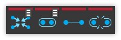
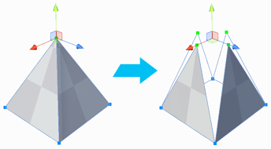

 Collapse Vertices
Collapse Vertices
Section Video: Vertex Actions: Collapse Vertices
Keyboard Shortcut : ALT C
Collapses all selected vertices to a single point, regardless of distance.

 Custom Settings Available :
Custom Settings Available :
| Setting | Description |
|---|---|
| Collapse To First | Collapse to first-selected vertex position, instead of selection center. |
 Weld Vertices
Weld Vertices
Section Video: Vertex Actions: Weld Vertices
Keyboard Shortcut : ALT V
Merge vertices within a set distance of one another.

 Custom Settings Available :
Custom Settings Available :
| Setting | Description |
|---|---|
| Collapse To First | Collapse to first-selected vertex position, instead of selection center. |
 Connect Vertices
Connect Vertices
Section Video: Vertex Actions: Connect Vertices
Keyboard Shortcut : ALT E
Create a new edge connecting the selected vertices.

 Split Vertices
Split Vertices
Section Video: Vertex Actions: Split Vertices
Keyboard Shortcut : ALT X
Splits a vertex into it’s individual vertices so that they may be moved independently of one another.

Note : When a vertex is Split, the newly seperated vertices will not actually move apart on there own. This was done for the image, to better illustrate the effect of this action.
 Fill Hole
Fill Hole
Section Video: All Actions: Fill Hole
Creates a new face filling any holes that touch the selected vertices.
 Custom Settings Available :
Custom Settings Available :
| Setting | Description |
|---|---|
| Fill Entire Hole | If enabled ProBuilder will automatically complete the selection to include the entire hole perimeter. If disabled, the new face only connects the selected vertices. |